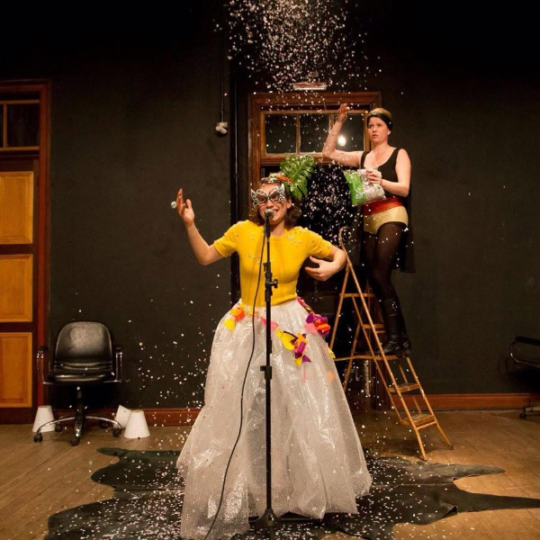
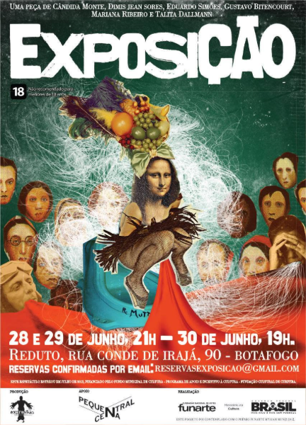
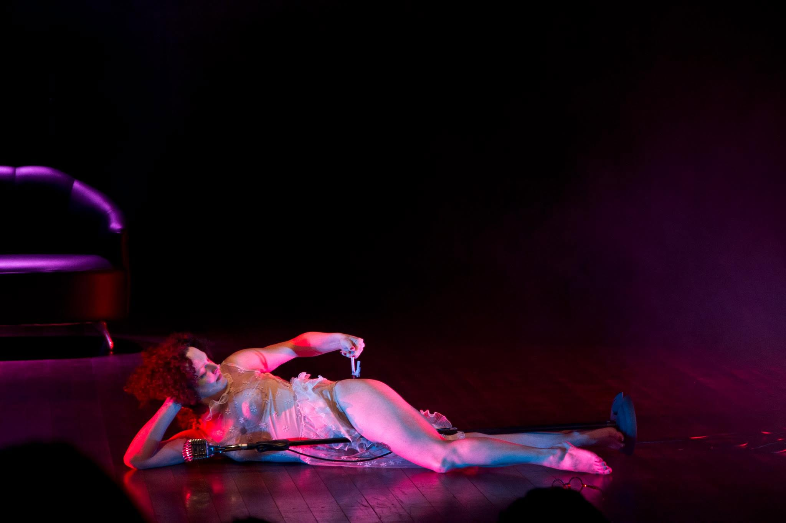

Prêmio Funarte Nelson Rodrigues: 100 anos do Anjo Pornográfico. Performance de Leonarda Glück. Trilha original de Edith de Camargo. Design de som de Jo Mistinguett. Figurinos de Amábilis de Jesus. Luz de Wagner Corrêa. Produção de Well Guitti e Cândida Monte. Estreia na mostra “A Gosto de Nelson”, Funarte, Rio de Janeiro. Circulação: Teatro José Maria Santos (Curitiba) · São Luís · Salvador · São Paulo. Referências da montagem: Dario Argento, David Lynch, o burlesco, o vaudeville.
Prêmio anual, sátira ao teatro local. Criação e comissão organizadora: Gustavo Bitencourt, Leonarda Glück, Ricardo Nolasco, Igor Augustho e Biá Lopse. Ligado à Selvática Ações Artísticas. Organizo e apresento. Edições anuais desde 2012 — em atividade até hoje.
Direção em parceria com Cândida Monte e Dimis Jean Sores. Estreia no Teatro Novelas Curitibanas, Curitiba, julho — temporada de vinte apresentações, por edital de ocupação da Fundação Cultural de Curitiba. Remontagem no Teatro Universitário de Curitiba, maio de 2013. Circulação: Rio de Janeiro · São Luís · São Paulo · Porto Alegre · Salvador · Natal. Colaboração de Cibele Forjaz. Em cena: Eduardo Simões, Mariana Ribeiro e Talita Dallmann.
A peça parte da correspondência real entre Lygia Clark e Hélio Oiticica, ambientada nos anos 1960.


